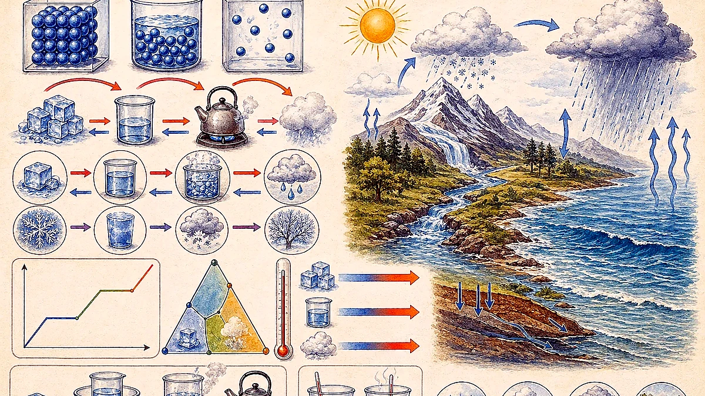
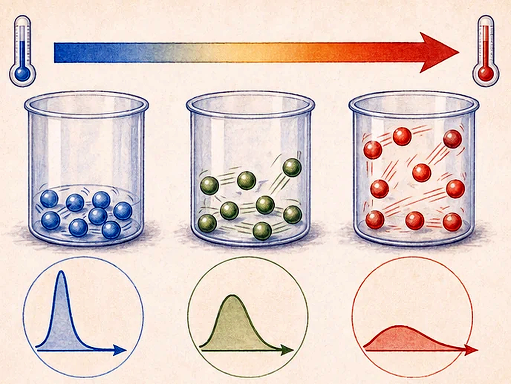
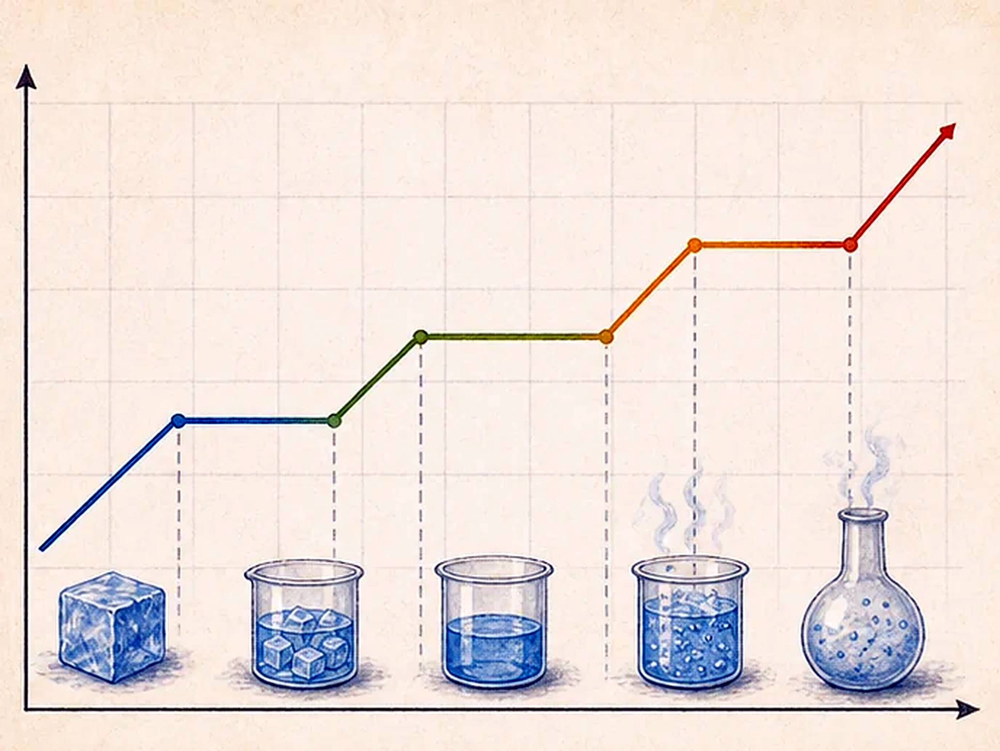
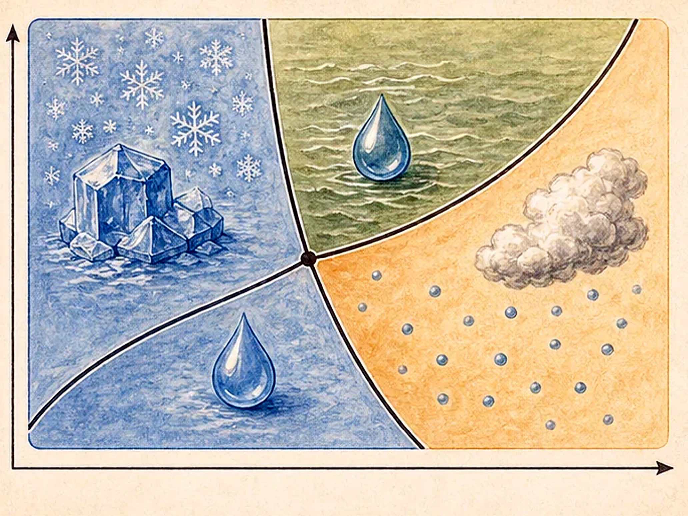
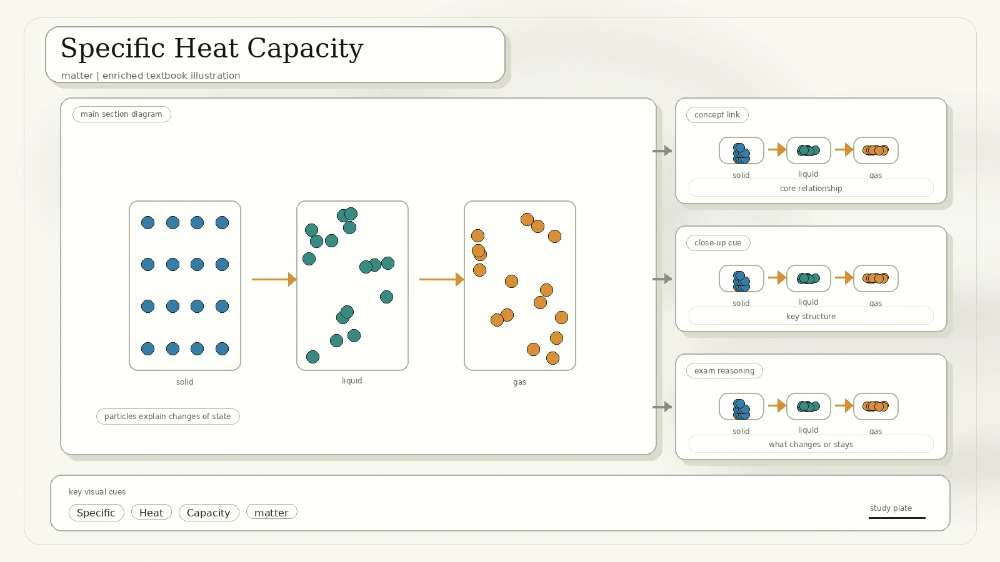
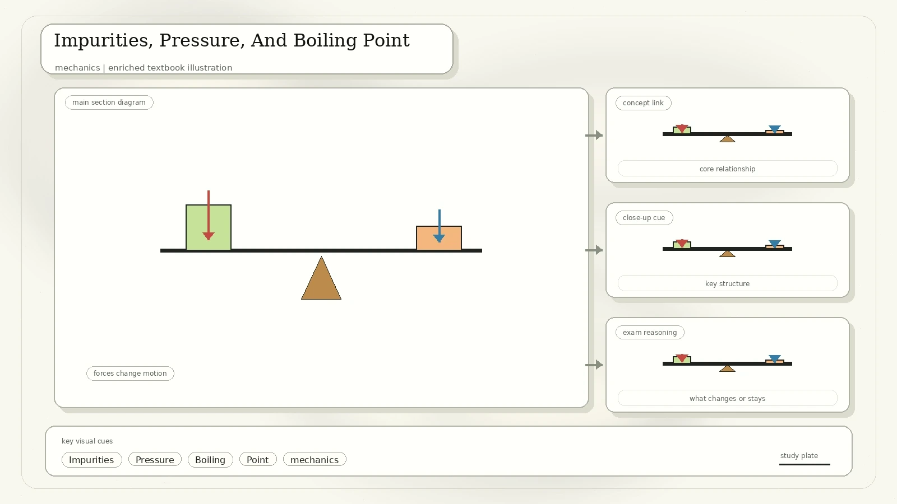
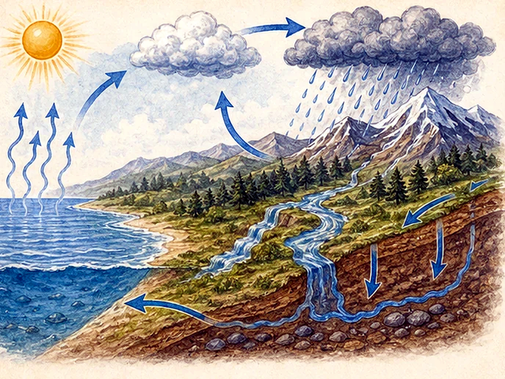
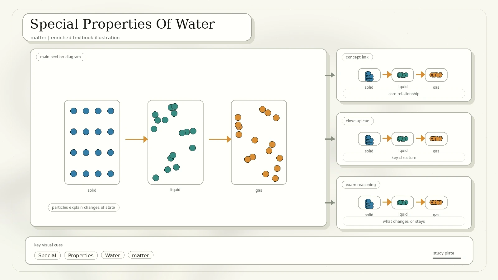
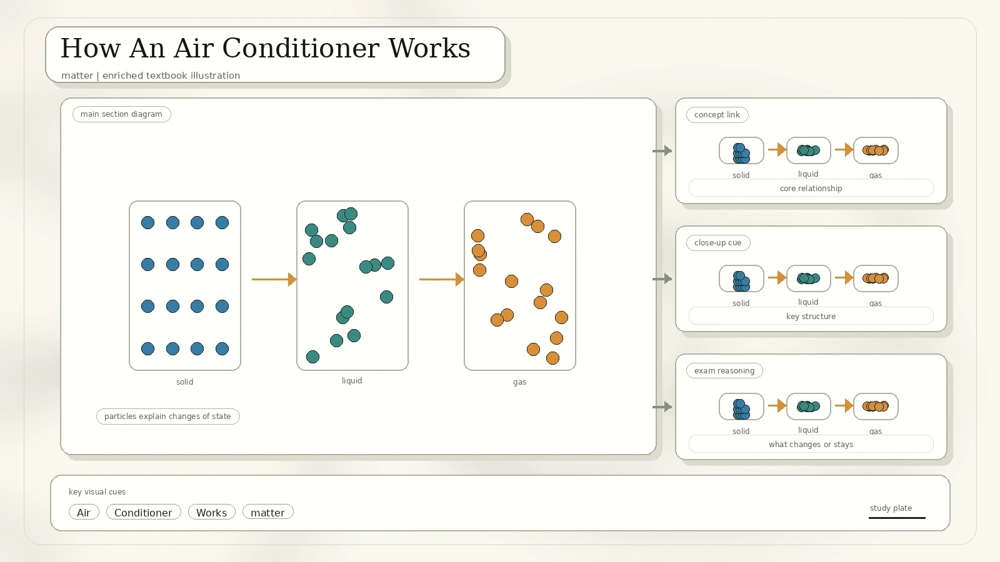

States Of Matter Are A Balance
The scan begins by recalling gas, liquid, and solid. The main difference between phases is the distance between particles, controlled by two competing factors: particle kinetic energy and attractions between particles.

Particles are far apart, move freely, and fill the available space. Cooling or compression can form a liquid.
Particles remain close but can slide past each other. Heating can form a gas; cooling can form a solid.
Particles are packed in ordered positions and mostly vibrate. Heating can cause melting.
Core idea: stronger attractions pull particles together; higher kinetic energy helps particles separate and move faster.
Temperature, Kinetic Energy, And Internal Energy
Matter is made of small particles. These particles are in constant motion and have kinetic energy. The total kinetic and potential energy of the particles is called thermal energy or internal energy.
- For the same kind of particles with the same mass, faster motion means more kinetic energy.
- The average kinetic energy of particles is directly proportional to temperature in Kelvin.
- When particles move faster, average kinetic energy increases and temperature rises.
- Heating can also increase potential energy slightly as particles move farther apart.

Boiling And Evaporation
Both processes change liquid into gas, but the scan stresses that they are not the same process.

| Feature | Evaporation | Boiling |
|---|---|---|
| Where it happens | Only at the surface of the liquid. | Throughout the liquid. |
| Speed | Slow. | Rapid. |
| Bubbles | Bubbles cannot form because vapour pressure is less than atmospheric pressure. | Bubbles form and rise when vapour pressure overcomes atmospheric pressure. |
| Temperature | Can happen over a range of temperatures. | Happens at the boiling point. |
| Energy source | Heat energy can come from the surroundings. | Usually needs an intense external heat source. |
| Cooling effect | Yes. | No direct evaporative-cooling effect. |
temperature is higher, exposed surface area is larger, air movement is stronger, and surrounding humidity is lower.
Fast particles escape first, so the remaining liquid has lower average kinetic energy and becomes cooler.
Sweaty clothes cooling joggers, roof cooling by water, and a wet cloth on the forehead during fever.
Heating Curve And Latent Heat
A heating curve has sloped regions when temperature rises and flat regions when phase changes occur. The flat parts are not "no energy"; they are energy changing the particle arrangement.

- Specific latent heat of fusion is energy needed to change solid to liquid at constant temperature.
- Specific latent heat of vaporization is energy needed to change liquid to gas at constant temperature.
- For water: latent heat of fusion is about 334 kJ/kg.
- For water: latent heat of vaporization is about 2260 kJ/kg, much larger than fusion.
- Specific heat capacity values in the scan: ice about 2.00 J/g/degrees C, water about 4.18 J/g/degrees C, steam about 2.01 J/g/degrees C.
| Substance | Specific Latent Heat Of Fusion | Specific Latent Heat Of Vaporization |
|---|---|---|
| Water | 334 kJ/kg | 2260 kJ/kg |
| Lead | 22.4 kJ/kg | 855 kJ/kg |
| Oxygen | 13.9 kJ/kg | 213 kJ/kg |
Triple Point And Critical Point
The scan adds a pressure-temperature phase diagram. It introduces two advanced landmarks that make phase changes depend on both temperature and pressure, not temperature alone.
The temperature and pressure where solid, liquid, and vapour phases of a substance coexist in equilibrium. The term was coined by James Thomson in 1873.
The conditions where liquid and vapour become indistinguishable. Above this region a substance can become a supercritical fluid.

Specific Heat Capacity
Specific heat capacity is the energy needed to raise the temperature of 1 kg of a substance by 1 degree Celsius. Different substances require different amounts of energy for the same temperature change.

Formula: Q = c m ΔT where Q is thermal energy, c is specific heat capacity, m is mass, and ΔT is temperature change.
0.200 kg of water cooling from 100.0 degrees C to 25.0 degrees C releases about 62,700 J.
400 kJ transferred to a 3.50 kg brick with c = 840 J/kg/degrees C gives a temperature rise of about 136 degrees C.
Water has high heat capacity, so the sea warms and cools more slowly than land, helping drive coastal breezes.
Impurities, Pressure, And Boiling Point
Pure substances melt and boil at fixed temperatures. Impure substances melt and boil over a range of temperatures because extra particles disturb the regular arrangement and escape of solvent particles.

Higher altitude means lower air pressure, so water boils at a lower temperature. At sea level it boils at 100 degrees C; near 5000 m it boils at about 83 degrees C.
Saltwater has a higher boiling point than pure water because solute-solvent attractions make it harder for water molecules to escape into gas.
Saltwater freezes below 0 degrees C because dissolved particles interfere with forming a regular solid structure.
The Water Cycle
The water cycle is a gigantic system powered by the Sun. Evaporation and condensation allow water to move between the surface, air, clouds, and back again.
- Evaporation changes liquid water into water vapour.
- Warm air rises and cools; water vapour loses heat and condenses into tiny droplets.
- Droplets gather into clouds and travel with wind.
- Precipitation returns water to Earth as rain, snow, sleet, or hail.
- Runoff, infiltration, groundwater flow, rivers, lakes, and oceans store and move water.
- Transpiration releases water vapour from plants.

Lapse rate: near Earth's surface, air usually becomes cooler as altitude increases. The scan gives a standard average decrease of about 6.5 degrees C for every 1000 m gained.
Special Properties Of Water
The scan highlights why water is unusual and why those properties matter for Earth and life.

Water absorbs a lot of heat before getting hot, helping moderate seasons and coastal climate.
Water dissolves more substances than many other liquids and carries minerals, chemicals, and nutrients.
Ice is less dense than liquid water, so it forms a protective layer over lakes and ponds in winter.
From 4 degrees C to 0 degrees C, water expands instead of contracting because freezing forms an open crystal structure.
How An Air Conditioner Works
The source uses an air conditioner to connect phase change, pressure, and heat transfer. A refrigerant repeatedly evaporates and condenses as it moves through the system.

Cold refrigerant in the evaporator absorbs heat from indoor air and helps cool the room.
The warm refrigerant gas is compressed, increasing its pressure and temperature.
Hot refrigerant releases heat to outside air in the condenser and changes back into a liquid.
The liquid refrigerant expands through a valve, becomes cold again, and returns to the evaporator.
Ideal Gas Law And Review Questions
The final scanned frames introduce ideal gases and then test particle theory, compressibility, phase changes, and gas volume relationships.
A theoretical gas made of many randomly moving point particles with no intermolecular attractions. Real gases behave most ideally at low pressure and high temperature.
The scan writes PV = nRT. At the same temperature and pressure, equal moles of gases occupy equal volume.
| Question From The Scan | Clean Answer | Why |
|---|---|---|
| Average kinetic energy of particles is directly proportional to what? | Temperature. | Temperature in Kelvin measures average particle kinetic energy. |
| Why are gases easier to compress than liquids and solids? | Their particles are spaced relatively far apart. | Large gaps can be reduced by pressure. |
| 0 degrees C water and 0 degrees C ice have the same kinetic energy. | True, for average kinetic energy at the same temperature. | The difference is mainly potential energy and particle arrangement. |
| Ice is less dense than water. | True. | The open ice crystal structure occupies more volume. |
| Saltwater has a lower boiling point than pure water. | False. | Dissolved salt elevates boiling point. |
| Water will not boil at 100 degrees C in a pressure cooker. | True. | Higher pressure raises the boiling point. |
What To Remember
During melting or boiling, temperature can stay constant while internal potential energy changes.
High heat capacity, ice floating, solvent behaviour, and anomalous expansion explain many natural effects.
Salt raises boiling point and lowers freezing point; lower pressure lowers boiling point.
Use PV = nRT to connect pressure, volume, amount, and temperature.